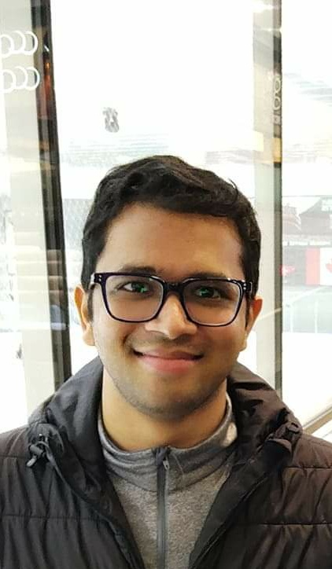

|
Ashwin Verma
|

|
I am an Assistant Professor in the
Department of Intelligent Systems at
Indian Institute of Technology Kanpur (IIT Kanpur).
My research interests lie in multi-agent and networked systems, distributed optimization and learning, information aggregation and statistical inference, and, more broadly, pretty much anything in applied probability.
Before joining IIT Kanpur, I was a Postdoctoral Research Assistant in the Department of Electrical and Computer Engineering at
Purdue University, where I worked with
Prof. Vijay Gupta.
During my postdoc, I worked on learning and control under communication constraints and statistical methods for detecting collusion in strategic multi-agent settings.
I obtained my Ph.D. from
University of California San Diego in 2024, where I had the fortune of working with
Prof. Behrouz Touri.
Previously, I obtained my B.Tech.–M.Tech. dual degree in Electrical Engineering from
IIT Kanpur, where I worked with Prof. R. K. Bansal.
|
Email /
Scholar /
Linkedin /
|